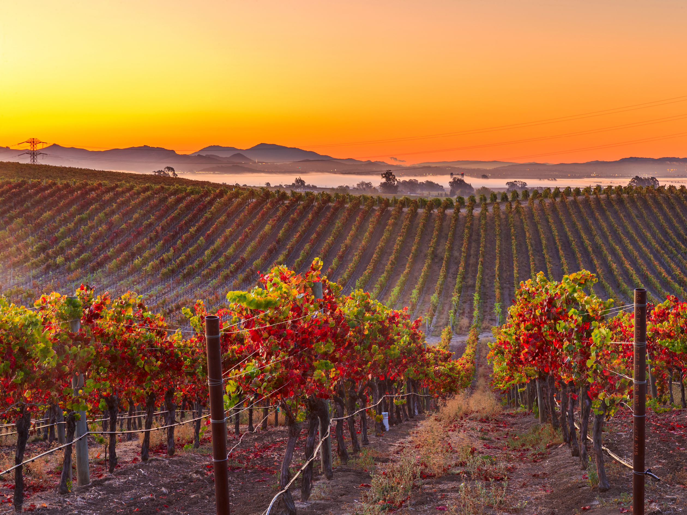

Napa Valley is a world-renowned wine region located in Northern California. Known for its picturesque vineyards, award-winning wineries, and stunning landscapes, it offers a captivating experience for wine enthusiasts and nature lovers alike.
Explore the vineyards and wineries that dot the valley, where you can take guided tours, participate in wine tastings, and learn about the winemaking process. Sample a variety of wines, from elegant Cabernet Sauvignons to crisp Chardonnays, and discover the unique flavors and characteristics of Napa Valley's renowned wine varietals. Many wineries also offer exquisite dining experiences, pairing their wines with locally sourced gourmet cuisine.
Beyond the wine, Napa Valley is blessed with natural beauty. Take a hot air balloon ride and admire panoramic views of rolling vineyards and the distant mountains. Go hiking or cycling along the scenic trails that wind through the valley, offering opportunities to immerse yourself in nature and appreciate the stunning landscapes. Don't miss a visit to the Napa River, where you can enjoy kayaking or paddleboarding amidst the serene waters.
The region is also home to world-class restaurants, offering culinary delights that perfectly complement the local wines. Indulge in farm-to-table cuisine, featuring fresh ingredients sourced from the fertile Napa Valley soil. Many acclaimed chefs have made Napa Valley their culinary playground, creating unforgettable dining experiences for visitors.
Napa Valley hosts various events and festivals throughout the year, celebrating wine, food, and the arts. From wine auctions and tastings to music concerts and cultural performances, there's always something happening in the valley. Check the event calendar to plan your visit around these vibrant and memorable experiences.
With its idyllic landscapes, exquisite wines, and culinary delights, Napa Valley offers a sensory journey that captivates the heart and palate. Whether you're a wine connoisseur, a nature enthusiast, or simply seeking a retreat in a picturesque setting, Napa Valley provides an unforgettable experience that celebrates the beauty and flavors of California wine country.